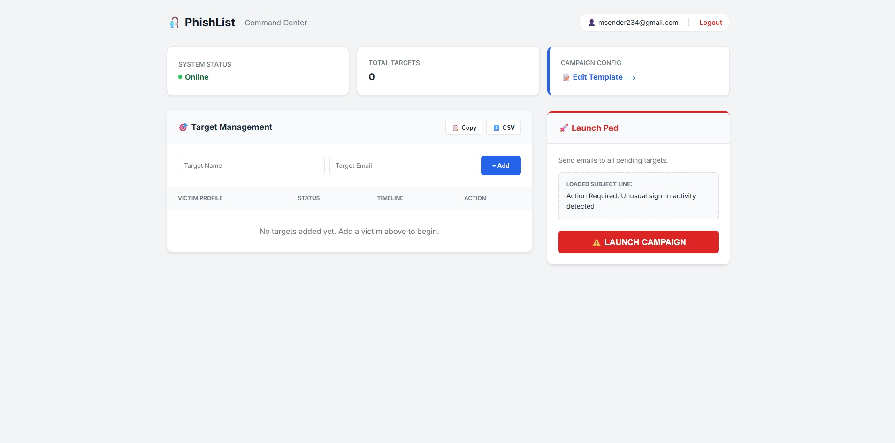
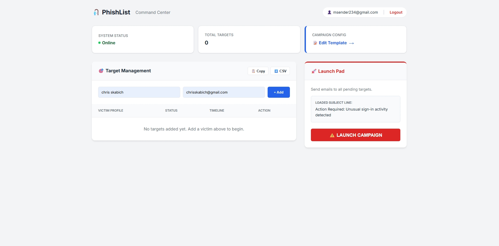
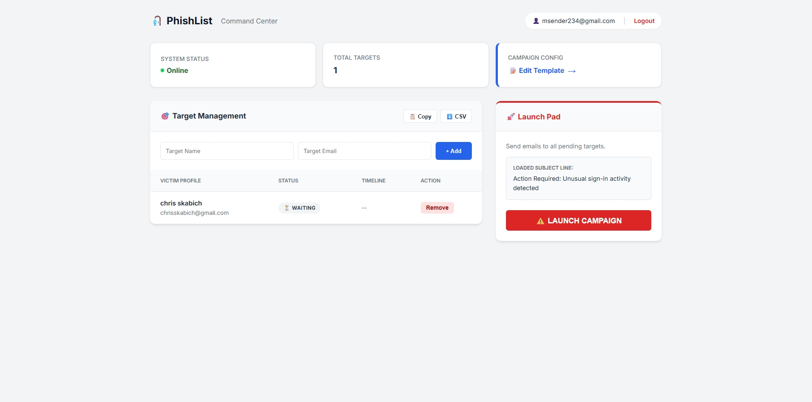
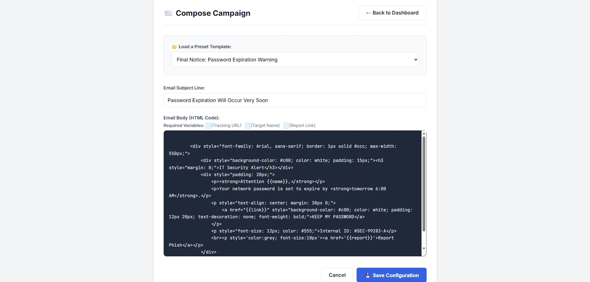
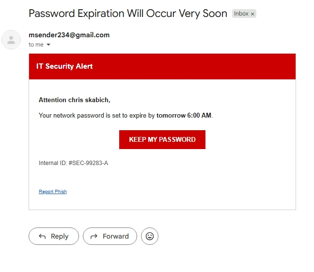
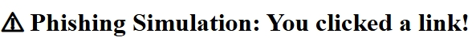
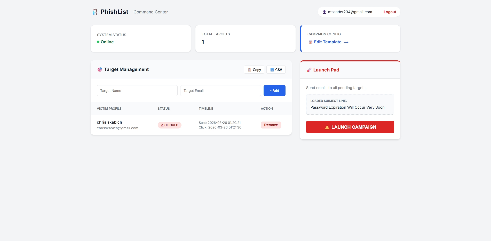
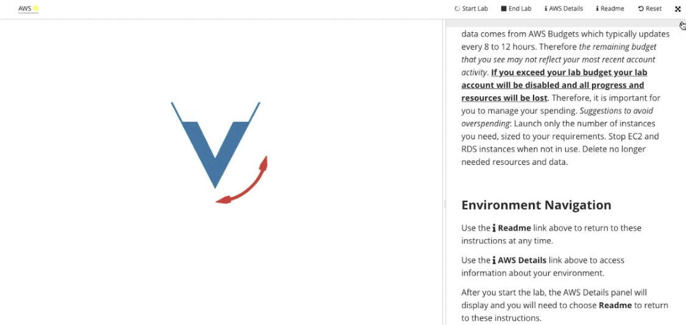

Dashboard Overview
The core of the application is a centralized dashboard where administrators have a bird's-eye view of all security campaigns. The interface is designed to be clean and intuitive, allowing for immediate access to target lists, email templates, and active deployments.

Enter Target
Administrators can import and manage target user lists. The system organizes potential targets by groups or departments, making it simple to launch focused, department-specific phishing simulations.

Target Added
Once added, the new target appears in the target management list. Administrators can view and edit target details, including department, groups, and interaction history.

Email Templates
A critical part of any phishing simulation is the realism of the lure. Administrators can select from pre-configured email templates or build their own using the built-in HTML editor, configuring sender details like address and display name, and adding realistic-looking attachments.
Template Selected & Details Edited
Once the best template is selected, administrators can proceed to confirm campaign details and prepare for launch, ensuring sender spoofing details like the address, subject line, and display name are correctly configured to test specific vectors.

Launch Campaign
Launching the campaign and monitoring live logs is crucial to track interactions in real-time. The Moment the campaign is active, the dashboard provides live visual feedback on campaign success rates, allowing administrators to view the attack's results instantaneously.
Target Views Email
Once the simulation is live, the target user opens the phishing email. This mimics real-world scenarios where users receive sophisticated, socially engineered emails designed to lure them into clicking a malicious link.

Clicks Malicious Link
Falling for the lure and clicking the link takes the user to a realistic credential-harvesting or notification landing page. This action is immediately logged by the system as a successful click event.

Malicious Result
To execute the simulation safely, I utilized Ngrok to expose the local Flask server to the internet, creating live, public-facing URLs. This mimics real-world behavior, demonstrating the severe result of credential harvesting without posing any actual security threat.

Live Analytics & Data Export
The moment a campaign launches, the dashboard actively tracks user interactions in real-time. It logs when an email is opened, when a link is clicked, and if a user correctly reported the email to IT. For compliance reporting and deeper analysis, all interaction data is captured and can be exported to CSV format, allowing the security team to calculate organization-wide metrics like average time-to-click versus average time-to-report.
Sample Output Data (`phishlist_export.csv`):
josh smith,joshsmith@gmail.com,SENT,2026-03-26 01:21:05,,
josh smith,joshsmith@gmail.com,CLICKED,2026-03-26 01:21:05,2026-03-26 01:21:30,
josh smith,joshsmith@gmail.com,REPORTED,2026-03-26 01:21:05,,2026-03-26 01:21:30
Cloud Migration Phase
AWS EC2
Instead of depending on Ngrok to temporarily tunnel a local environment, the platform leverages AWS EC2 to establish a persistent, cloud-based infrastructure. This ensures 24/7 uptime for active campaigns, stable public endpoints for tracking user interactions, and the scalability required to handle organization-wide simulations.
